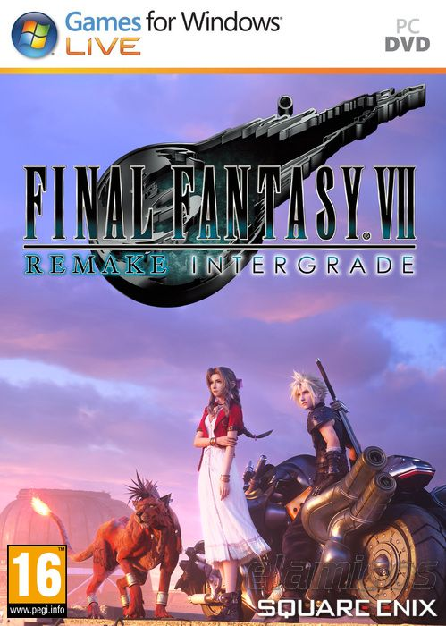

Final Fantasy VII Remake Intergrade 92.0 GB
Género: JRPG
Cloud Strife, exmiembro de Soldado, se adentra en la ciudad del mako,
Midgar. El mundo del clásico juego FINAL FANTASY VII renace con
gráficos de última generación, un nuevo sistema de combates y una aventura
adicional con Yuffie Kirasagi como protagonista.
.